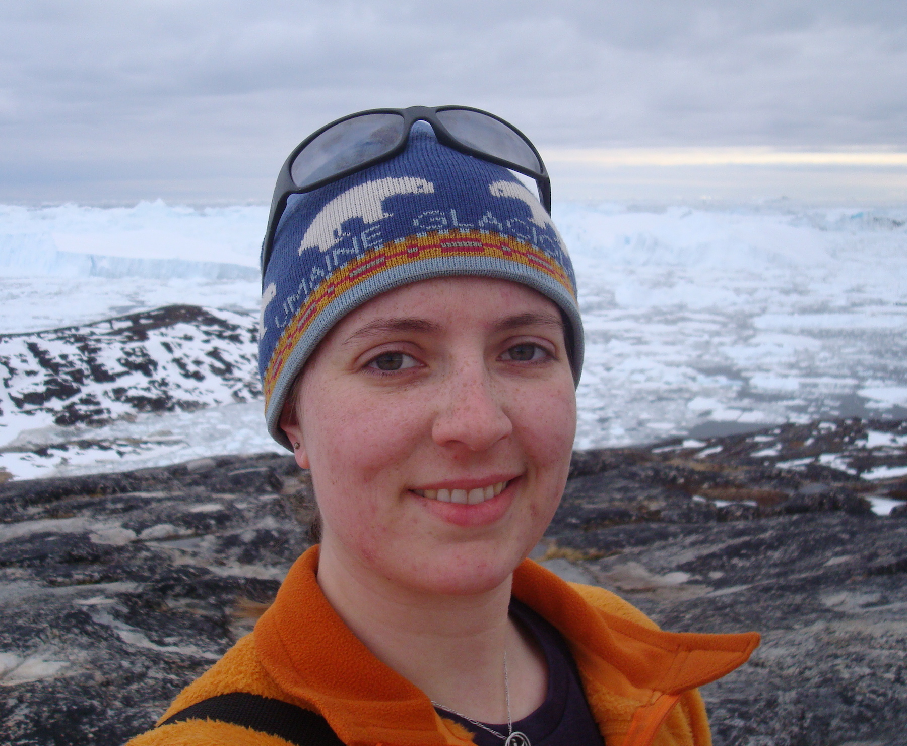

Our Team
Jane Koh

- Affiliation: eScience Institute
- Ask me about: Zoom technical support
Johan Nilsson
- Affiliation: Jet Propulsion Laboratory, NASA
- Ask me about:
Jessica Scheick

- Affiliation: University of Maine
- Ask me about:
- icepyx
- Data Access
- Data Subsetting
- Geospatial Data Processing
- Python (basics)
- Git / GitHub
Amy Steiker
- Affiliation: National Snow and Ice Data Center
- Ask me about:
- NSIDC Data Products
- ICESat-2 Data Access from NSIDC
- ICESat-2 Data Subsetting Services from NSIDC
- OpenAltimetry
- NASA Earthdata
Lindsey Heagy

- Affiliation: U. C. Berkeley
- Ask me about:
Fernando Perez

- Affiliation:Department of Statistics, UC Berkeley
- Ask me about:
- Git / GitHub
- Reproducible Science
- Jupyter
- PyData tools (NumPy, SciPy, matplotlib, Pandas)
- Numerical / scientific computing
Ellen Buckley
- Affiliation: University of Maryland
- Ask me about:
Fernando Paolo

- Affiliation: NASA Jet Propulsion Laboratory
- Ask me about:
David Shean

- Affiliation: UW Civil and Environmental Engineering
- Ask me about:
Ian Joughin

- Affiliation: APL
- Ask me about:
Alek Petty

- Affiliation: University of Maryland
- Ask me about:
Axel Schweiger
- Affiliation: APL
- Ask me about:
Anthony Arendt

- Affiliation: eScience & APL
- Ask me about: team building, community software, administrative support
Ben Smith
- Affiliation: APL
- Ask me about:
- Land-Ice Products
- Gridding
- Python
Alex Huynh
- Affiliation: APL
- Ask me about:
Matthew Siegfried

- Affiliation: Department of Geophysics, Colorado School of Mines
- Ask me about:
Nick Holschuh
- Affiliation: Department of Geology, Amherst College
- Ask me about:
- The ICESat-2 Satellite
- Data Products
- Data Structures
- Python
Scott Henderson

- Affiliation: eScience & ESS
- Ask me about:
- Python
- Conda
- Jupyter
- Pangeo / Cloud Computing
Tom Neumann
- Affilation: NASA Goddard Space Flight Center
- Ask me about:
Sebastian Alvis

- Affiliation: eScience & APL
- Ask me about:
- Jupyter (and specifically Connecting to the JupyterHub)
- Git / GitHub
- Pangeo / Cloud Computing
- Python
- Pandas
Daniel Shapero

- Affiliation: APL
- Ask me about:
- Git
- Shell
- Python
- Generalized Geospatial Hackery
Tyler Sutterley

- Affiliation: APL
- Ask me about:
- Git / GitHub
- Jupyter
- Python
- IceSat-2 Data Products
- Altimetry
Zheng Liu
- Affiliation: APL
- Ask me about:
- icepyx
- Cloud / Sea Ice products